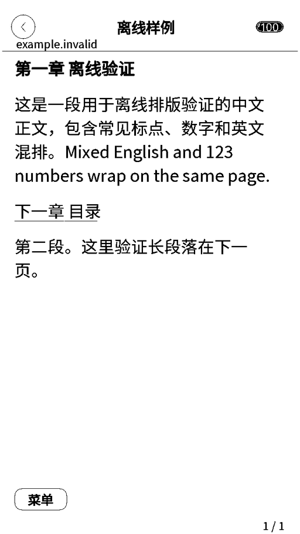
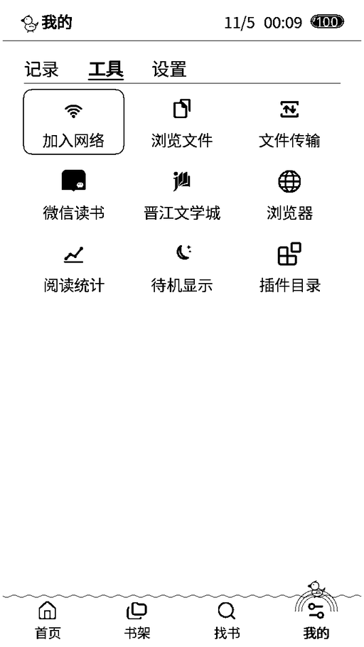
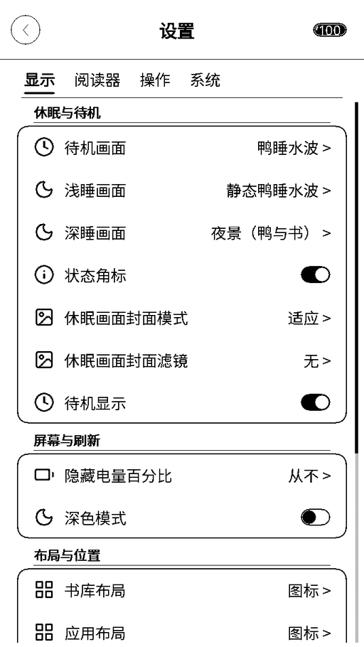
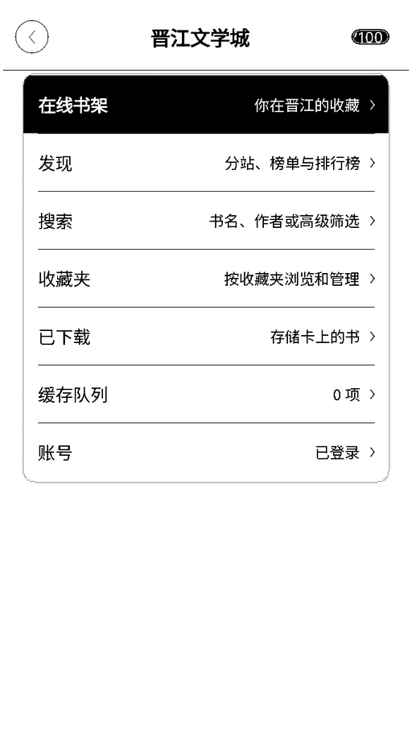
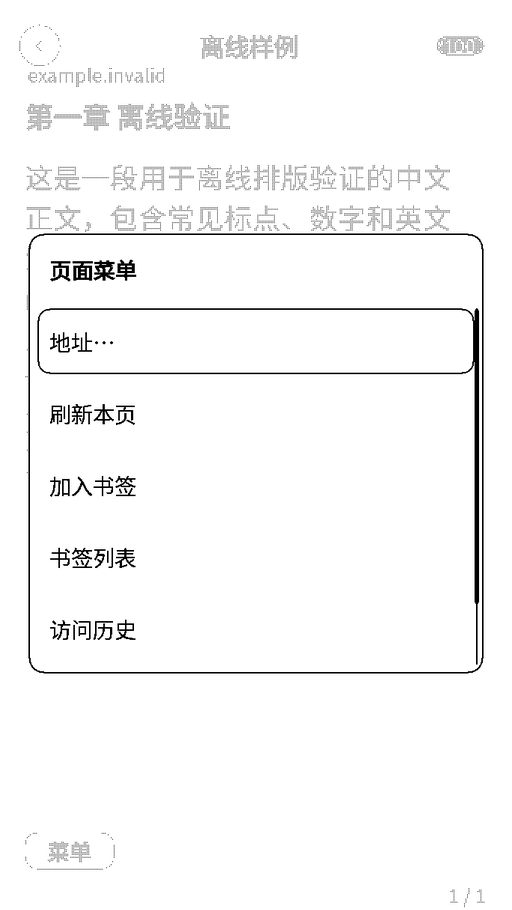
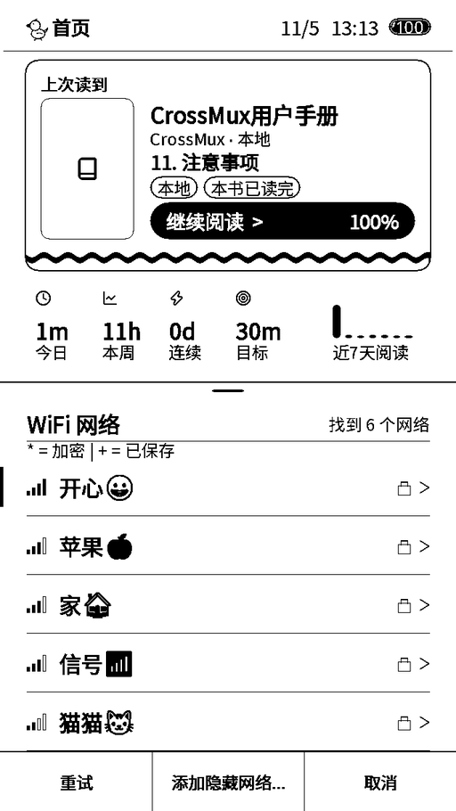
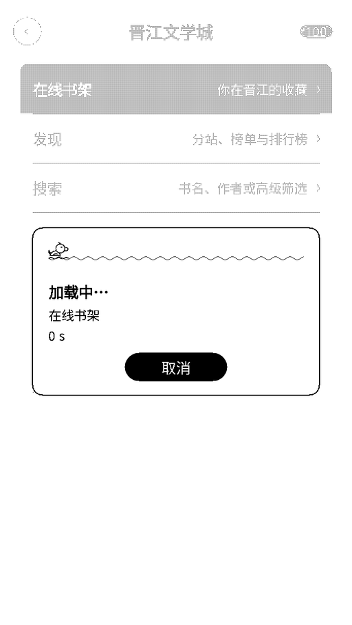

01
界面与交互
首页只留上次读到、最近阅读、阅读统计和追更；设置按分类组织；应用收进「我的 → 工具」。阅读器改为单行标题栏，进度移到页脚波浪条，正文多一行。
让 Read Pico 能读晋江、微信读书、本地书和网页。
A reading system for the MindReset Read Pico: JJWXC, WeRead, a text-mode web browser, Chinese typography, partial refresh and device OTA — built on CrossMux.
首页只留上次读到、最近阅读、阅读统计和追更；设置按分类组织；应用收进「我的 → 工具」。阅读器改为单行标题栏，进度移到页脚波浪条，正文多一行。
书架、榜单、搜索、收藏夹、章节购买、段评与章评、作者有话说、阅读进度同步。免费章节和已购买的 VIP 章节都可以缓存；段评正文可离线缓存。
输入网址，抓取正文并按当前阅读字号重新排版。支持链接、翻页、书签和访问历史；自动识别 GBK / GB18030 / UTF-16；HTTPS 与明文 HTTP 都可打开。不支持 JavaScript、表单和图片。
一套覆盖 8,105 个通用规范汉字 + GB2312 的可缩放字体，界面、书名、晋江和正文共用。界面与阅读字号分开（阅读 10–34pt）；离线拼音输入与书名搜索；常见 emoji 有内置字形。
16 级文字与界面抗锯齿；列带局部刷新与局部残影清理；水波纹翻页与 DU 快速翻页；异步推屏、扫描看门狗、状态栏时钟局部刷新和屏幕修复。
书架显示来源徽标和追更快照；书签角标与书签面板；阅读器目录内可直接更新、缓存或购买晋江章节。成品 EPUB 与章节缓存使用设备绑定密钥加密。
倾斜或左右摇晃设备翻页。慢倾斜、回弹、纵向晃动和普通点按都不会误触。
设备内 OTA 同时更新 app 与数据包（镜像源、双 app 槽升级），另有 SD 卡固件更新；数据包按需加载；33 种界面语言；崩溃报告页记录重启原因。浏览器传书、WebDAV、OPDS 与 Calibre 无线沿用 CrossMux。
以下为真机截图。Wi-Fi 名称与网页样例使用合成数据，不含设备上的书籍、账号或网络信息。







| Device | Read Pico（小纸 Pico，RDP-G01-W） |
|---|---|
| Panel | 4.7" · 684 × 1216 · 16 灰阶 · 约 297 PPI · 无前光 |
| SoC | ESP32-S3 · 双核 240 MHz · 8 MB PSRAM · Wi-Fi / BT5 |
| Flash | 16 MB · 2 × 7.19 MiB app 槽 · 1.5 MiB 数据分区 |
| Input | 电容触摸 + 3 个电容键 · 无 BOOT / RESET 键 |
| Release | 脆皮鸭 CPYOS 0.6.2 · 预编译包只面向 Read Pico |
这些版本的设备 OTA 清单仍在 GitHub Pages，部分网络无法访问。0.6.2 已于 2026-11-05 发布：请用本页的「从 CPYOS 升级」或完整安装包升级到 0.6.2 或更新版本。0.2.2 起清单改走 GitHub Release 镜像并全程保持 240 MHz，之后即可在设备内 OTA。
Devices on 0.2.1 or older: use the web flasher on this page. Their OTA manifest is hosted on GitHub Pages, which some networks cannot reach.
第一次安装、从 CrossMux 1.6.5 或出厂固件切换，用「首次安装」。已经在跑 CPYOS 的设备用「升级」，保留设置和数据分区。
首次安装会重建分区表并要求浏览器擦除芯片。开始前请确认已备份整片 Flash；SD 卡里的书和设置不会被网页刷机删除。
已经安装 CPYOS 后，可以直接在设备上更新：
0.2.1 及更早版本请先用网页刷机升级。
0.6.2 起检查更新优先直连 GitHub，失败后才依次尝试镜像线路；固件下载最多只探测三条线路。OTA 会更新非活动的 app 槽和数据包，不动 SD 卡、书库和设置。只有分区表或包格式破坏性变化才需要完整安装。
这是非官方固件。第一次安装前请用 esptool 做一次整片 16 MiB 备份，并把备份放在另一台机器上。
python -m esptool --chip esp32s3 read_flash 0x0 0x1000000 readpico-backup.bin
恢复时把整片备份写回 0x0。完整包里的 FLASH.md 与 SHA256SUMS 是偏移量和校验和的准绳。